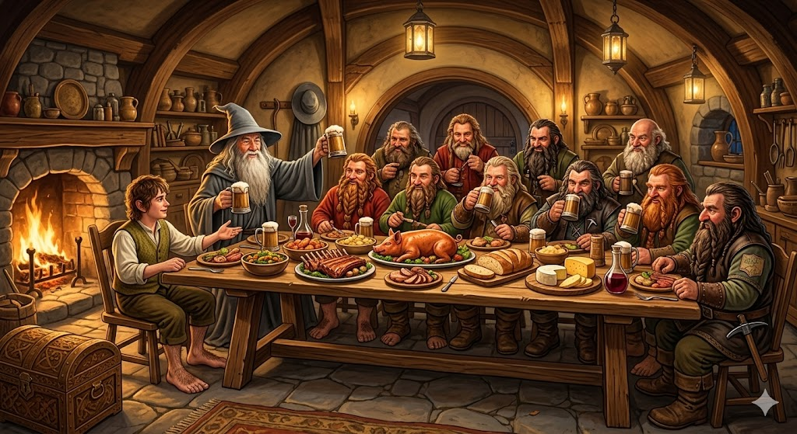
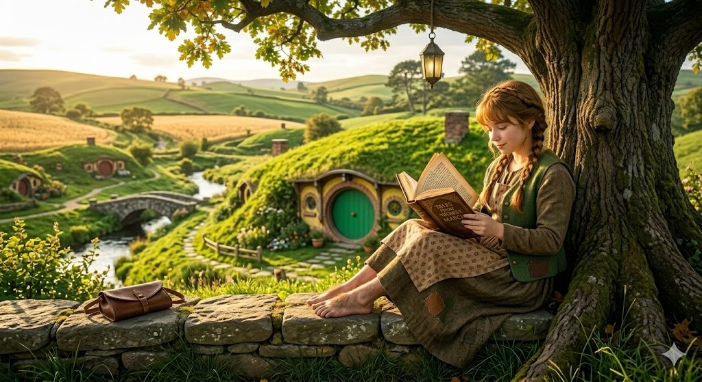
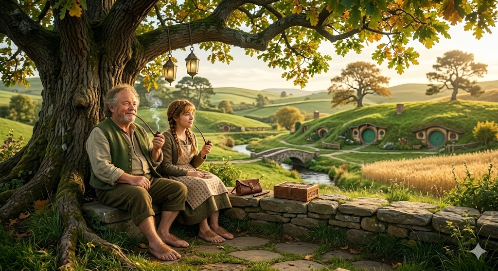

In the Shire, food is not merely sustenance; it is a celebrated ritual that anchors the day. Whether it is a simple crust of crusty bread with thick blackberry jam for a first breakfast or a steaming dish of mushroom taters for supper, every meal is prepared with a focus on freshness and abundance.

In the Shire, books are cherished less as academic tools and more as repositories of family history, local lore, and well-loved tales. While most Hobbits prefer a good story told over a pint of ale, there is a quiet, enduring respect for the written word, especially when it concerns the brewing of beer, the tending of gardens, or the legendary maps that outline the borders of their peaceful four Farthings.

In the Shire, ale is more than just a drink—it’s a cornerstone of Hobbit hospitality and the preferred accompaniment to a long evening at the Green Dragon Inn. Brewed with local barley and clear spring water, these fine ales are celebrated for their smooth, amber richness. Whether shared over a game of quoits or a quiet hearth, a well-poured pint represents the very essence of peace and good company in the Four Farthings.

In the Shire, the art of cultivating Longbottom Leaf is a point of immense pride in the Southfarthing, where the warm sun and rich soil produce the finest pipe-weed in all of Middle-earth. The leaf is known for its sweet, earthy aroma and a smooth smoke that can clear the mind after a long day of gardening.